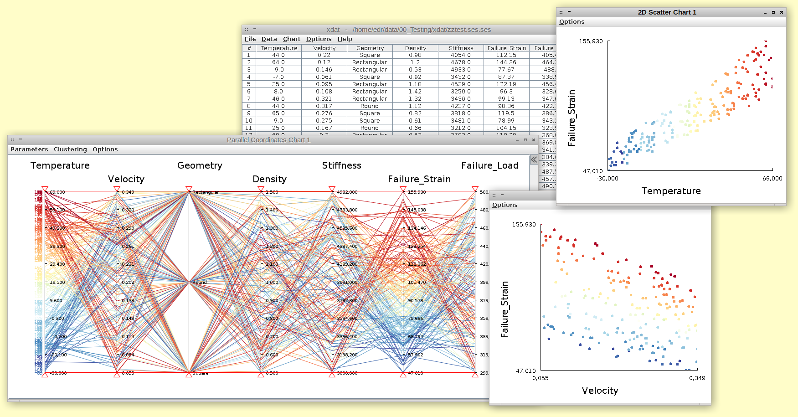

Individual part
I would like to visualize data in more than the usual, three to maximal four dimensions, usually used in visualizations,
due to complexity. When working with large dimensional data there is often a need to discard some of the dimensions to
make the visualization readable. Therefore being able to "walk into" the data and choosing which features that are
interesting the the specific case, could be desirable. An example could the data from
mental health in tech .
Here many factors or dimensions could affect mental health, and therefore if we want to take a closer look into specific
measurements related to mental health. It should therefore be easier to observe connections between the measurements and
actual health for the experimental group. The important part of downscaling the dimensions would be to keep track of
which data points are shown at the moment. This approach would therefore use extensive descriptions of the visualized
data. The intended audience would in this case be mainly focused towards doctors trying the diagnose patients, but it
could also be used by laymen, like computer scientists, which could investigate the connections, in the data, and try
to suggest possible relations, to professionals. An example of the visualization could be
as shown below. Here the data are shown in three versions.
First all the data shown in a single visualization with the possibility of choosing specific dimensions. Then the
extracted data features, here in two dimensions which could also be three or four dimensions if it would make sense.
At last the raw data shown in a spreadsheet, which could be good if the specific data used for the visualization is
highlighted, giving a better understanding of the actual data points selected.

From: xdata.org